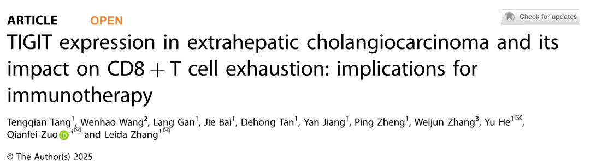
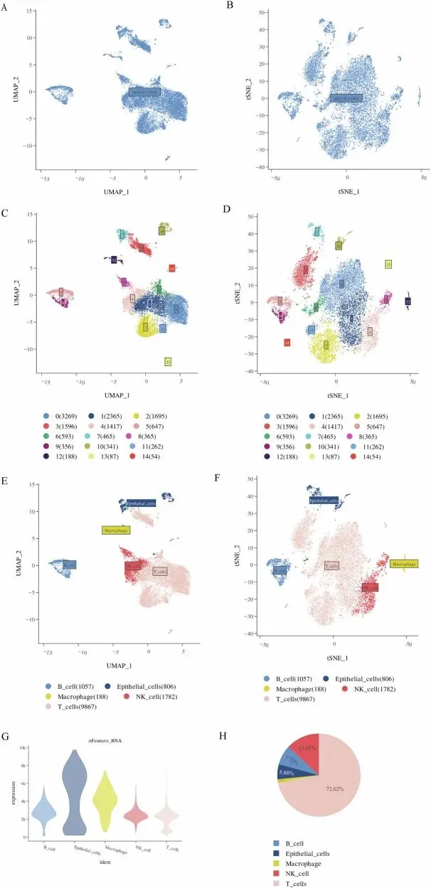
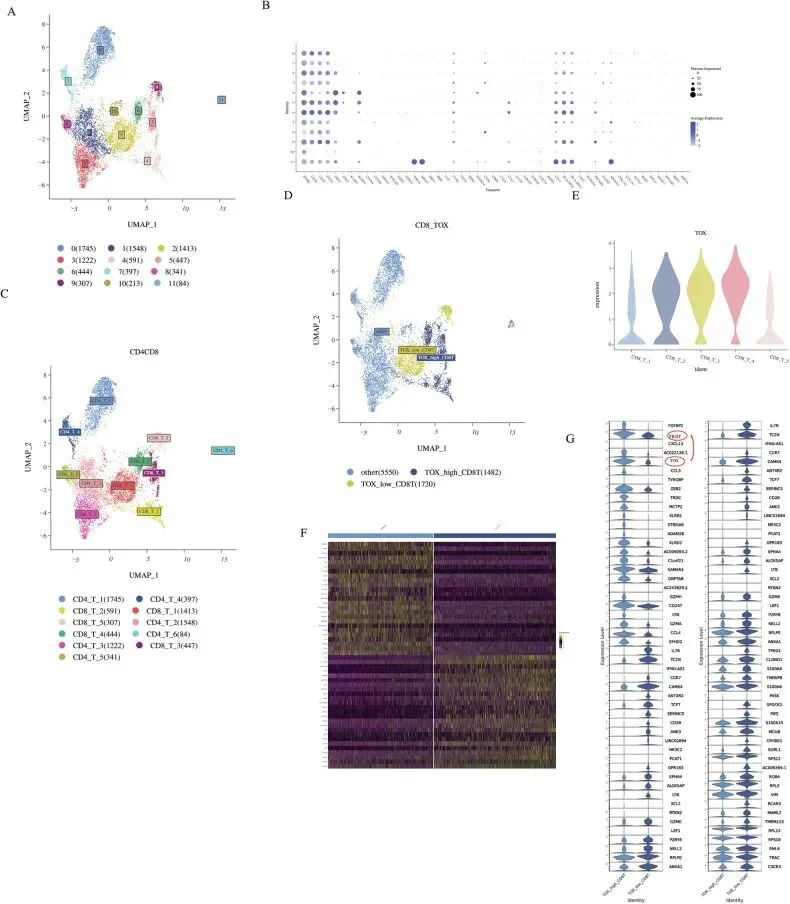
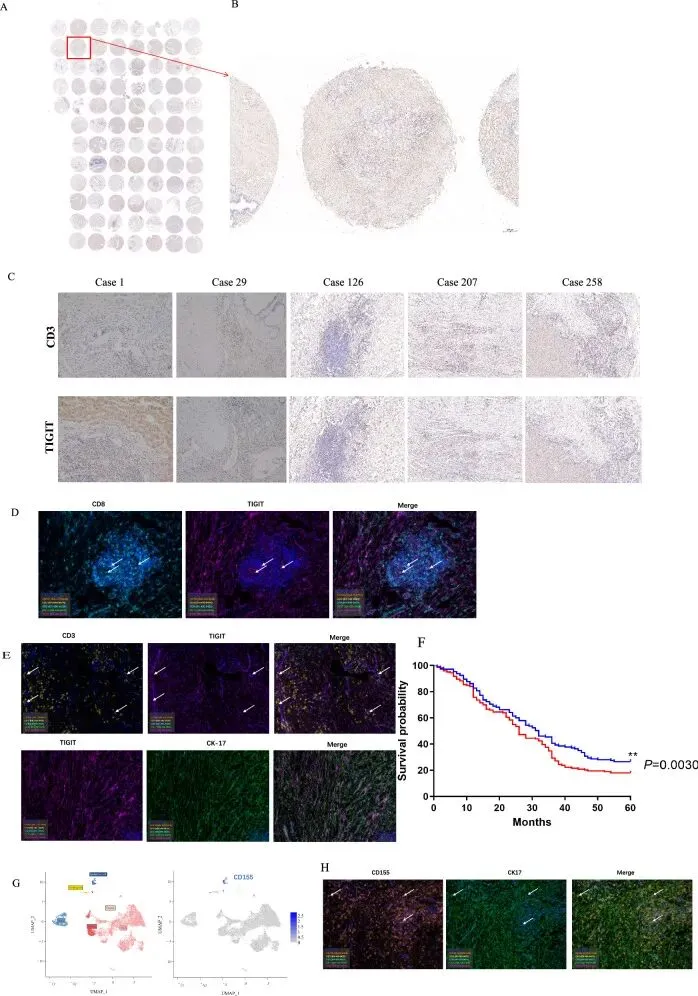
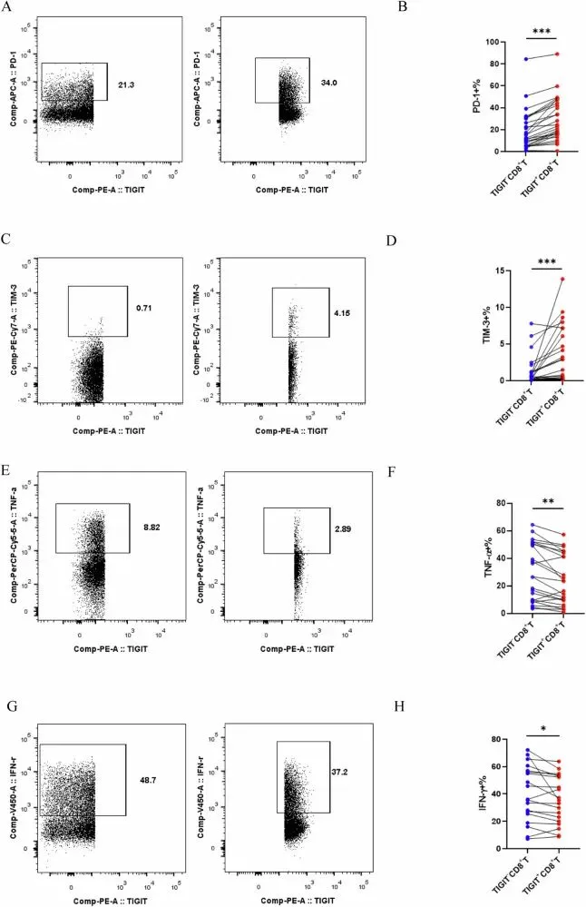
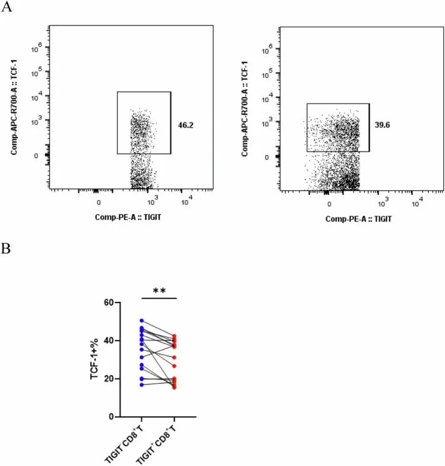
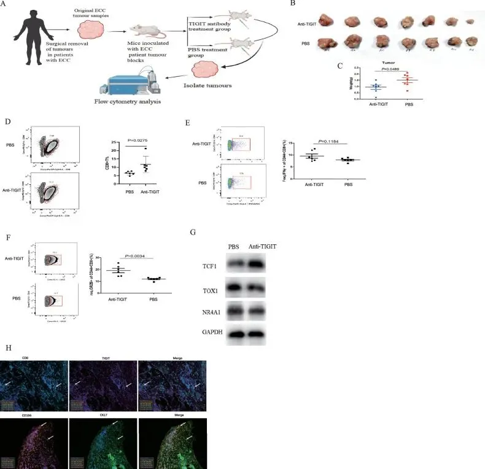
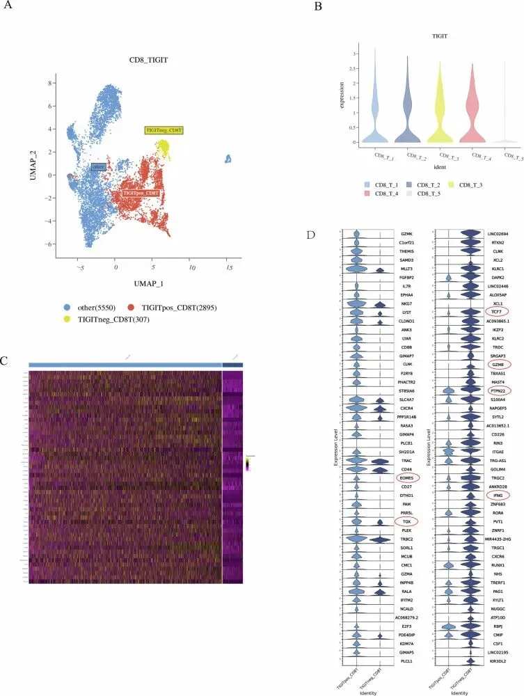

IF=9.6| 肝外胆管癌中的TIGIT表达及其对CD8+T细胞耗竭的影响对免疫治疗的启示
原文：https://mp.weixin.qq.com/s?__biz=MzAwMzIzOTk5OQ==&mid=2247531388&idx=6&sn=0bcbbe65b4e3e86d96db8972ceb8d30f&chksm=9b3c022cac4b8b3a3cf97703db05f65eb75d5d20af43057efb6937be1085840e96bec01454cf#rd 合集：文献速递
一、写在前面
肝外胆管癌（ECCA）是一种恶性肿瘤，其微环境组成 和免疫逃逸机制 研究对揭示肿瘤异质性 和治疗策略 至关重要。T 细胞免疫受体 TIGIT 作为新兴免疫抑制受体 ，在多种癌症中参与 T 细胞衰竭（Tex） ，但其在 ECCA 中的作用及对 CD8+ T 细胞功能的影响尚不明朗。本文通过单细胞 RNA 测序（scRNA-seq） 分析 ECCA 肿瘤浸润淋巴细胞（TILs） ，揭示 TIGIT 在 TOX+ CD8 T 细胞中的高表达 ，并结合组织芯片 和免疫组化 验证其与患者预后的负相关 。流式细胞术进一步证实 TIGIT+ CD8+ T 细胞功能受损 ，表达 TNF-α、IFN-γ 和 TCF-1 降低 ，而 PD-1 和 TIM-3 升高 。患者来源异种移植（PDX）模型 验证了 anti-TIGIT 治疗的潜力 。本文旨在探讨 TIGIT 在 ECCA 中的作用及其免疫治疗意义 。原文链接:https://pubmed.ncbi.nlm.nih.gov/39939322/ DOI: 10.1038/s41419-025-07388-4

如果需要单细胞数据分析教学 、生信热点全文复现 、自测数据个性化分析 辅导、常态化实验学习，欢迎联系客服微信[Biomamba_zhushou]**二、主要结果 **
| 1. ECCA患者的临床病理特征这项研究共纳入了302名肝外胆管癌（ECCA）患者，构成了一个大规模的研究队列（表1）。患者的中位年龄为61岁，其中女性占61.5%，男性占38.5%。在诊断方面，83.4%的患者为肝门周围型胆管癌，16.6%为远端型胆管癌。大部分肿瘤（62.6%）为中度分化，而低分化和高分化的肿瘤分别占24.1%和13.3%。绝大多数患者（92.8%）接受了包括不同类型肝切除术在内的根治性手术治疗。对于占主体的肝门周围型胆管癌患者，其中位无病生存期为12个月，总生存期为20个月。这些详细的临床病理学信息为后续的免疫学分析提供了坚实的基础。表1变量 | 胆管癌患者（ n = 302） |
|---|---|
| 年龄，中位数（范围） | 61 (30–84) |
| 性别，例数（%） | |
| 女性 | 116 (38.5%) |
| 男性 | 186 (61.5%) |
| 根治性手术，例数（%） | 280 (92.8%) |
| 左肝切除术 | 141 (46.8%) |
| 右肝切除术 | 60 (19.9%) |
| 中肝切除术 | 30 (9.8%) |
| 胰十二指肠切除术 | 46 (15.2%) |
| 肝胰十二指肠切除术 | 3 (1.1%) |
| 姑息性手术，例数（%） | 22 (7.2%) |
| 诊断，例数（%） | |
| 肝门部胆管癌 | 252 (83.4%) |
| 远端胆管癌 | 50 (16.6%) |
| 肿瘤分级，例数（%） | |
| 高分化 | 40 (13.3%) |
| 中分化 | 189 (62.6%) |
| 低分化 | 73 (24.1%) |
| 肝门部胆管癌 （ n = 252）， Bismuth-Corlette分型，例数（%） | |
| I | 0 |
| II | 34 (13.6%) |
| IIIa | 59 (23.6%) |
| IIIb | 85 (33.6%) |
| IV | 74 (29.2%) |
| 胆红素 μmol/L，中位数（范围） | 137.1 (9.1–562.7) |
| 白蛋白 g/L，中位数（范围） | 34.9 (25.1–51.4) |
| CA19-9 Ku/L，中位数（范围） | 102.6 (1.5–800) |
| 胆道引流，例数（%） | |
| 无引流 | 142 (47.1%) |
| 经皮肝穿刺胆道造影（PTC） | 95 (31.3%) |
| 内镜逆行胆管造影（ERC） | 52 (17.2%) |
| PTC和ERC | 13 (4.4%) |
| 肝门部胆管癌无病生存期，中位数月（范围） | 12 (0–74) |
2. 通过单细胞RNA测序揭示ECCA的高分辨率免疫图谱 研究人员首先对从肿瘤组织中分离出的肿瘤浸润淋巴细胞（tumor-infiltrating lymphocytes, TILs） 进行了单细胞RNA测序（scRNA-seq） 希望在高分辨率下解析肝外胆管癌（ECCA）的免疫微环境（图1）。在对数据进行严格的质量控制后，共有13,000个高质量的细胞被用于后续分析。通过对这些细胞进行聚类和注释，作者识别出了微环境中的主要免疫细胞亚群，包括T细胞、NK细胞、B细胞和巨噬细胞 。其中最关键的发现是，T细胞 是TILs中最主要的组成部分，总数达到了9,867个，占所有分析细胞总数的72.02% 。这一结果表明，T细胞在ECCA的肿瘤免疫微环境中可能扮演着核心角色，因此后续的分析也主要聚焦于对T细胞亚群的深入研究。

图1
3. 免疫检查点分子TIGIT在TOX+CD8 T细胞中显著过表达
在确定T细胞是ECCA微环境中的主要免疫细胞后，作者对T细胞亚群进行了更深入的单细胞转录组分析（图2）。他们首先将T细胞进一步细分为CD4+和CD8+ T细胞亚群。分析发现，作为T细胞耗竭（T cell exhaustion） 的关键转录因子，TOX 的表达主要富集在CD8+ T细胞 中。在此基础上，通过对TOX阳性和TOX阴性的CD8+ T细胞进行差异基因表达分析，他们得到了一个核心发现：新兴的免疫检查点分子TIGIT 在TOX阳性的CD8+ T细胞中显著过表达 。这一强烈的共表达模式首次将TIGIT与ECCA中耗竭的CD8+ T细胞直接联系起来，表明TIGIT的高表达可能参与并驱动了CD8+ T细胞的耗竭过程。

图2
4. TIGIT高表达与ECCA患者生存期缩短相关为了能更科学地验证单细胞测序的结果并评估TIGIT的临床相关性，研究人员在一项涉及大规模临床样本的分析中，探究了TIGIT蛋白的表达及其对患者生存率的影响（图3）。通过对包含89例ECCA患者的组织微阵列（tissue microarrays） 进行免疫组织化学（immunohistochemistry） 染色，他们证实了TIGIT蛋白在肿瘤组织中的表达。进一步的双重免疫荧光染色显示，TIGIT与CD8在T细胞表面共表达 ，这在蛋白水平上验证了单细胞测序的结果。至关重要的是，在一项涉及289名患者的生存分析中，研究发现TIGIT的表达水平与患者的预后密切相关：高TIGIT表达 的患者中位生存期仅为26个月 ，显著低于低TIGIT表达 患者的32个月 。此外，研究还发现TIGIT的配体CD155 主要表达于肿瘤的上皮细胞 （即癌细胞）上。这些结果共同表明，TIGIT是ECCA中一个重要的不良预后标志物，并且其介导免疫抑制的分子基础（TIGIT在T细胞上表达，其配体在癌细胞上表达）在肿瘤微环境中普遍存在。

图3
5. TIGIT是ECCA中T细胞耗竭的潜在表面标志物
利用流式细胞术（flow cytometry） 研究人员对ECCA患者的T细胞进行了详细的表型分析，更进一步从功能层面定义TIGIT阳性T细胞的状态。通过比较TIGIT阳性CD8+ T细胞 与TIGIT阴性CD8+ T细胞，他们发现TIGIT阳性细胞表现出经典的耗竭特征（图4）。一方面，TIGIT阳性细胞表面其他关键的抑制性检查点分子，如PD-1 和TIM-3 的表达水平显著更高。另一方面，在功能上，这群细胞的效应功能受损，其产生的关键杀伤性细胞因子——肿瘤坏死因子-α（TNF-α） 和干扰素-γ（IFN-γ） 的水平显著低于TIGIT阴性细胞。这些发现共同表明，TIGIT阳性代表了ECCA肿瘤微环境中一群功能耗竭的CD8+ T细胞，TIGIT可能与其他免疫检查点分子协同作用，共同诱导了T细胞的功能障碍。

图4
6. ECCA患者TIGIT阳性CD8+ T细胞中TCF-1的表达降低研究人员单独检测了TCF-1 的表达水平，用于从转录因子层面进一步证实TIGIT与T细胞耗竭的关联。 TCF-1是一种维持T细胞干性（stemness）和功能的关键转录因子，其表达的下调或缺失被认为是T细胞走向终末耗竭的重要标志。通过流式细胞术（flow cytometry） 分析，研究人员发现，与TIGIT阴性的CD8+ T细胞相比，TIGIT阳性CD8+ T细胞 中表达TCF-1的细胞比例显著降低 （图5）。 TIGIT表达与TCF-1表达之间的这种负相关性 ，为TIGIT阳性CD8+ T细胞处于耗竭状态提供了更有力的证据，表明这群细胞可能已经丧失了自我更新的能力，进入了功能衰竭的终末阶段。

图5 7.PDX模型中TIGIT抗体的免疫治疗效果作者的团队构建了人源肿瘤异种移植（patient-derived xenograft, PDX） 小鼠模型，并使用TIGIT抗体（anti-TIGIT antibody） 进行治疗，希望能验证靶向TIGIT的治疗潜力。结果显示，与对照组相比，接受TIGIT抗体治疗的小鼠肿瘤生长速度显著减慢，最终肿瘤重量也显著降低 （图6）。在免疫细胞层面，抗体治疗能够增加肿瘤组织中效应CD8+ T细胞的浸润比例 。功能分析表明，这些T细胞的杀伤能力得到增强，其表达的关键杀伤分子颗粒酶B（granzyme B, GRZB） 的比例显著升高。更重要的是，在分子水平上，TIGIT抗体成功地逆转了T细胞的耗竭状态：它上调了抑制耗竭的关键转录因子TCF-1 的蛋白水平，同时下调了促进耗竭的转录因子TOX1和NR4A1 的蛋白水平。这些临床前证据有力地表明，TIGIT抗体能够通过逆转T细胞耗竭、增强CD8+ T细胞的抗肿瘤活性来抑制ECCA的生长，为临床治疗提供了新思路。
图6 8. ECCA中TIGIT阳性CD8+ T细胞呈现耗竭且杀伤潜能低下研究人员回归到单细胞RNA测序（scRNA-seq） 数据，对TIGIT阳性和阴性的CD8+ T细胞进行了直接的基因表达谱比较，从转录组层面最终确认TIGIT阳性T细胞的功能状态（图7）。分析结果清晰地显示，TIGIT阳性CD8+ T细胞 高表达一系列与T细胞耗竭（T cell exhaustion） 相关的关键基因，如TOX 和EOMES ；而TIGIT阴性细胞则高表达抑制耗竭的基因，如TCF7 （编码TCF-1蛋白）（图7）。在功能层面，TIGIT阳性CD8+ T细胞的杀伤能力（killing capacity） 也显著降低，其编码关键杀伤分子颗粒酶B（GZMB） 和干扰素-γ（IFNG） 的基因表达水平均显著低于TIGIT阴性细胞。这一独特的基因表达特征为之前的发现提供了最终的分子证据，证实了在ECCA的肿瘤微环境中，TIGIT阳性CD8+ T细胞确实处于一种功能耗竭且杀伤潜能低下的状态。
图7三、随便聊聊
本研究揭示 TIGIT 在 ECCA 中高表达与不良预后相关 ，促进 CD8+ T 细胞衰竭 和肿瘤免疫逃逸 。anti-TIGIT 治疗 在 PDX 模型中降低肿瘤负荷 ，提升 CD8+ T 细胞活性 ，并通过上调 TCF-1、下调 TOX1 和 NR4A1 逆转衰竭 。该发现为 ECCA 免疫治疗提供了新靶点 。然而，研究样本有限 ，需更大队列验证 TIGIT 与 TCF-1/TOX1/NR4A1 轴的机制 。未来，可探索 TIGIT 阻断与 PD-1 等联合疗法 ，提升 CD8+ T 细胞响应 。该工作强调 TIGIT 在 ECCA 进展中的关键作用 ，推动精准免疫治疗的发展 。
四、参考文献
[1]: Tang T, Wang W, Gan L, Bai J, Tan D, Jiang Y, Zheng P, Zhang W, He Y, Zuo Q, Zhang L. TIGIT expression in extrahepatic cholangiocarcinoma and its impact on CD8 + T cell exhaustion: implications for immunotherapy. Cell Death Dis. 2025 Feb 12;16(1):90. doi: 10.1038/s41419-025-07388-4. PMID: 39939322; PMCID: PMC11822069.

如何联系我们

 留一个领取资料、开箱即用的单细胞分析镜像的微信号[Biomamba_zhushou]，方便各位随时交流。同时我们也构建了交流群矩阵，欢迎大家入群讨论。
大家可以阅读完这几篇之后添加给生信入门初学者的小贴士
没有检索，就没有发言权
留一个领取资料、开箱即用的单细胞分析镜像的微信号[Biomamba_zhushou]，方便各位随时交流。同时我们也构建了交流群矩阵，欢迎大家入群讨论。
大家可以阅读完这几篇之后添加给生信入门初学者的小贴士
没有检索，就没有发言权
已有生信基地联系方式的同学无需重复添加

 您点的每个赞和在看，我都认真当成了喜欢
您点的每个赞和在看，我都认真当成了喜欢